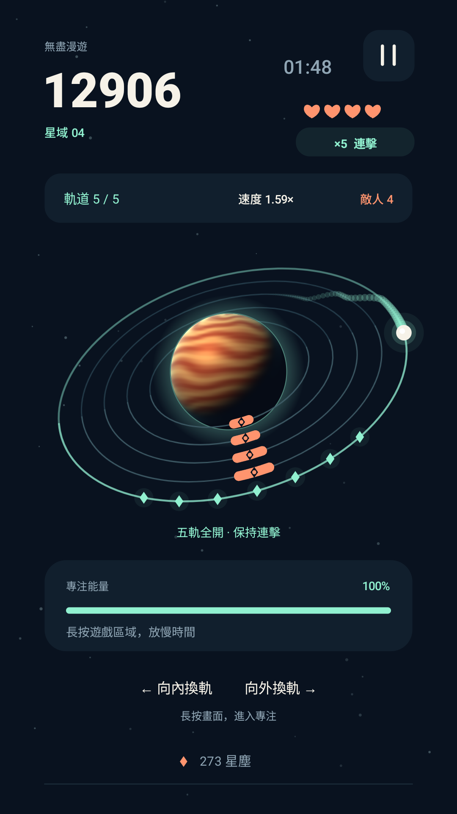

Corzfree · Independent games
在星辰之間，
找到你的節奏。
Aster Loop · 星環漫遊
環繞一顆自轉的行星，跟隨星塵，從兩條軌道一路挑戰到五軌全開。
已於 Google Play 上架 · 遊戲介面支援英文與繁體中文
核心玩法可離線運作 · 含廣告 · 發行者：Corzfree

越玩，越有挑戰
軌道逐步增至五條，速度與障礙密度漸增。點左側向內、右側向外，長按啟動有限的專注慢動作。
每一天，一片新星空
無盡漫遊挑戰自己的紀錄；每日軌道帶來 90 秒挑戰。透過遊玩解鎖彗星外觀與本機里程碑。
進度，留在你的裝置
不必註冊帳號。遊戲可離線運作，分數、星塵與設定保存在本機。廣告服務的資料處理另見隱私政策。
我們可以幫什麼忙？
遊戲問題、意見回饋或隱私請求，請寄信至 free4564567@gmail.com。回報問題時可附上手機型號、Android 版本、遊戲版本與重現步驟。
本機存檔可透過 Android 應用程式設定中的「清除儲存空間」移除；操作前請注意，已解鎖的外觀和紀錄也會清除。瞭解資料刪除方式